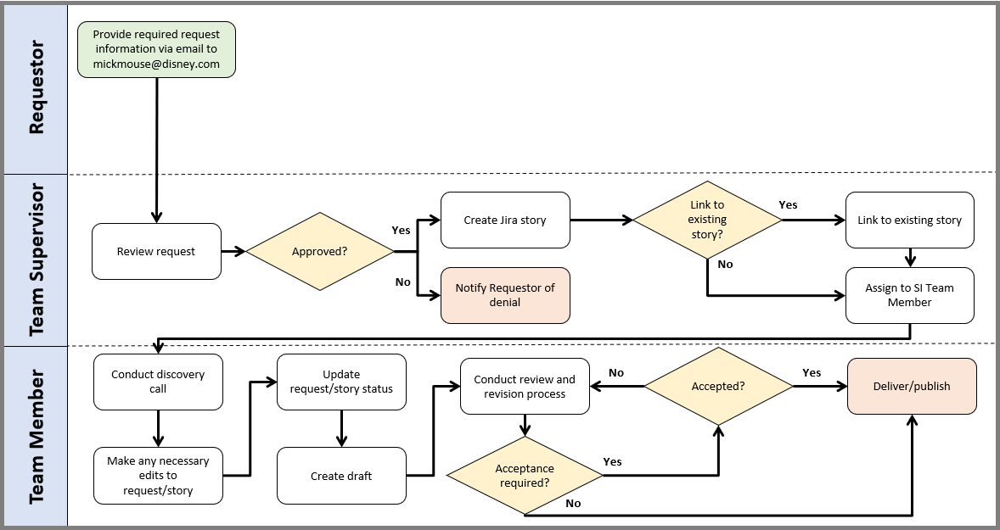
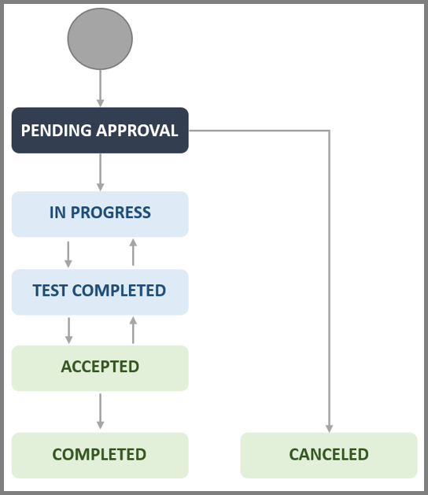

Documentation Request Procedure
Introduction
Purpose
The purpose of this standard opperating procedure is to provide details and instructions about receiving and fulfilling documentation requests. It identifies who is responsible for approving, writing, revising, and publishing requested documentation.
Audience
This procedure applies to all personnel submitting a documentation request (Requester) to the Documentation Team (Team) and to Team personnel fulfilling those request(s).
Roles and Responsibilities
| Role | Responsibility |
|---|---|
| Requestor | Provide required request information. |
| Team Member | Write, review, revise, and publish requested documentation. |
| Team Supervisor | Review documentation requests and create Jira stories. |
Definitions
| Type | Term | Definition |
|---|---|---|
| Jira Linking | “Is a child of” | Linking category for a request that sits below another issue or request (e.g., a subtask that belongs to a task). |
| Jira Linking | “Is a parent of” | Linking category for a request that sits above another issue or request (e.g., a story that is made up of subtasks). |
| Jira Linking | “Is related to” | Linking category for a request that is related to an existing issue or request. |
| Jira Status | Accepted | Status of requests that have been accepted for delivery/publication. |
| Jira Status | Pending Approval | Status of requests that: (1) have undergone steps 2-7 of the procedure or (2) have undergone steps 2-7 of the procedure (“approved”), but work has not begun |
| Jira Status | Canceled | Status of requests that have been rejected or canceled. |
| Jira Status | Completed | Status of requests that have been delivered/published. |
| Jira Status | In Progress | Status of approved requests that a Team Member is actively working on. |
| Jira Status | Test Completed | Status of requests that are being reviewed and discussed by a Team Member and the Requester(s), Stake Holder(s), and/or Subject Matter Expert(s) (SME) in meetings, chat, email, etc. for additional information and/or confirmation of content and/or formatting. |
| Request Terminology | Intended audience | The individual(s) or group(s) the documentation is intended for. |
| Request Terminology | Medium | The means by which the documentation will be delivered/published (e.g., SharePoint site, PDF, Word document, etc.). |
| Request Terminology | Milestones/Deadlines | Hallmarks of progress for the documentation and/or the date it needs to be completed by. |
| Request Terminology | Purpose | The specific topic, intended use, and/or goals of the documentation. |
| Request Terminology | Scope | An in-depth description of sub-tasks, outline/tree, desired layout/format, etc.; includes any additional details that can provide further context for the documentation (e.g., a SharePoint site that reflects the desired formatting, applicable regulations or standards, etc.). |
Confidentiality Statement
The information contained within this document is intended for internal use. Any review, retransmission, dissemination, or other use of the information in this document by persons or entities other than approved personnel is strictly prohibited. Any unintended recipient of this document is expected to contact a company representative immediately and destroy any copies of this document.
Procedure and Flowchart
The following flowchart and procedure provide instructions about submitting and fulfilling documentation requests.
Note
The Jira workflow can be found on Appendix A.
Flowchart

Procedure
Requesters are required to complete step 1 of the procedure to successfully submit a documentation request. Mickey Mouse (Team Supervisor) reviews the submitted request and either approves or rejects it. If the request is approved, then the Team Supervisor creates a Jira story and assigns it to Kelsey McCallister and/or Lizzy McGuire (Team Member); if the request is denied, then the Team Supervisor notifies the Requestor(s) and provides a justification.
Once a request is assigned, the assigned Team Member conducts a discovery call with the Requestor(s) to confirm the provided information and gather any additional information. The Team Member then makes any necessary edits to the request/story, creates an initial draft of the requested documentation, and begins the review and revision process. This review and revision process may require additional discussions (e.g., in meetings, chat, email, etc.) with the Requester(s), Stake Holder(s), and/or SME(s). Finally, the Team Member delivers/publishes the requested documentation when they have determined that the review and revision process is complete; however, Requestor(s) may require the Team Member to receive a formal acceptance of the documentation prior to delivery/publication.
Important Note
Requester(s), Stake Holder(s), and SME(s) are expected to attend meetings and/or respond to correspondence in a timely manner; failure to do so can result in delayed Milestones/Deadlines and/or incorrect content or formatting. Providing a high level of detail in the request form may reduce the number of meetings and/or correspondences.
Requestor
-
Email all required information (i.e., Purpose, Scope, SharePoint site link and administrator, etc.) to the Team Supervisor.
Note
Requestors must provide sufficient information to complete the request; failure to do so can result in delayed Milestones/Deadlines. Refer to the Request Terminology in the Definitions Table for descriptions of the various required information.
Team Supervisor
- Receive and review the request’s information.
- Determine if the request is approved.
- If the request is approved, then continue to step 4.
- If the request is denied, then notify the Requestor(s) of the denial; no further action required.
- Create a Jira story for the request.
- Determine if the request/story needs to be linked to an existing story.
- If the request/story needs to be linked, then continue to step 6.
- If the request/story does not need to be linked, then proceed to step 7.
- Link the request to an existing request/story.
- Assign the request to a Team Member.
Team Member
- Conduct a discovery call to confirm and/or gather additional request information (i.e., Purpose, Scope, etc.) with the Requestor(s).
- Make any necessary edits to the request/story.
- Update the request/story status to
In Progressonce work has begun. - Create an initial draft of the requested documentation.
- Conduct the review and revision process.
- Determine if formal acceptance for delivery/publication is necessary.
- If acceptance is necessary, then continue to step 14.
- If acceptance is not necessary, then update the status of the request/story to
Acceptedand proceed to step 15.
- Determine if the documentation is accepted for delivery/publication by either the Team Supervisor or the Requester(s).
- If acceptance is denied, then return to step 12.
- If acceptance is granted, then update the status of the request to
Acceptedand continue to step 15.
- Deliver/publish the requested documentation as previously defined and update the status of the request to
Completed; no further action needed.
Appendix A: Jira Workflow for Requests
The following figure represents the Jira workflow that is applicable to this procedure. Workflow statuses are defined within the Definitions Table.
Note
This workflow is for context only and is not a fixed workflow within Jira.

| Sign-off Date | Name |
|---|---|
| 03/03/2024 | Mickey Mouse |